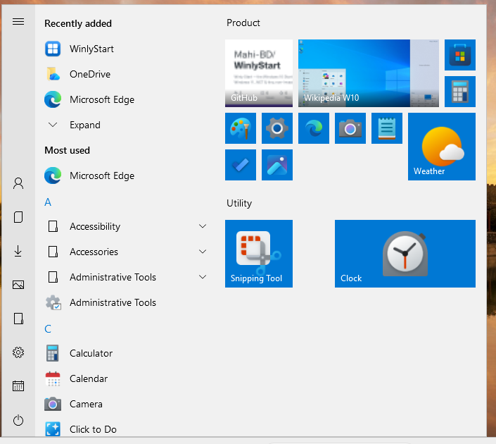

Winly Start
The Windows 10 Start menu, back on Windows 11.
Free and open source (MIT). Per-user install — no administrator rights needed.

What it does
- The Start button, the Windows key and Ctrl+Esc open Winly Start instead of the Windows 11 menu.
- Left rail, “Recently added” and “Most used”, an A–Z app list with folders, and a tile board with groups.
- Live tiles — calendar, clock, a Pictures slideshow, and website tiles showing each site’s own preview.
- Add any program, file, shortcut or website to Start, and edit it later.
- A three-month calendar with colour-categorised notes, importable and exportable as JSON or iCalendar.
- Follows your Windows 11 light/dark mode, accent colour and taskbar position.
It doesn’t modify Windows
Winly Start never injects into Explorer, never patches system files and never writes outside your own user settings. It runs as a normal user and never asks for administrator rights. Quit it and the Windows 11 Start menu is back instantly.